TED常用模块
TED常用模块
差分对PairedMosfet
使用 PairedMosfet 模块构建模拟差分对管，其中包含两个MOS管：A管、B管，两个MOS管的 finger 数量相同，都等于 m 的值。
参数信息
| 参数 | 说明 | 类型 | 默认值 |
|---|---|---|---|
| l | MOS 管的长度，代表栅极的长度 | float | 1e-6 |
| w | MOS 管的宽度，代表源极和漏极的宽度 | float | 5e-6 |
| model | 模型 | str | "nch" |
| m | finger 数量 | int | 4 |
| y_spacing | 上下 MOS 管的间距 | int | 600 |
案例
正常使用
lmin = get_circuit().get_pdk().lmin()
dut = DifferentialPair(
l=lmin * 10, w=lmin * 30, model="nch", m=2, mode="cross", d_via=2, dummy_m=1
)
(d1, d2) >> dut % (g1, g2) >> s
guardring(dut, connectTo=Vss())版图：
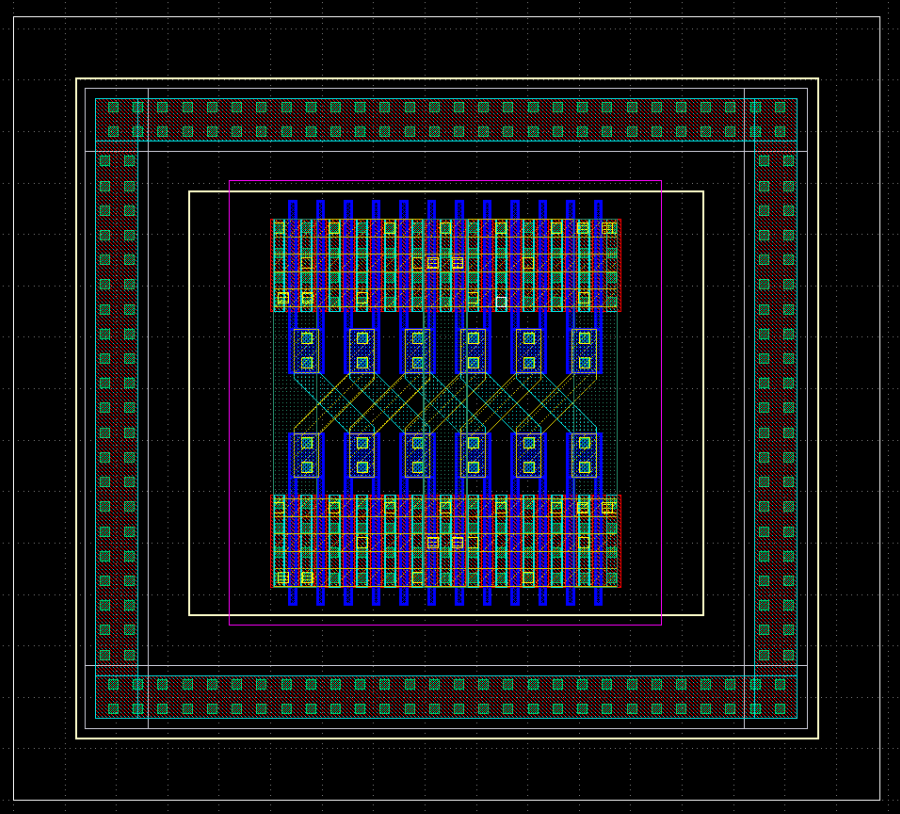
差分对ABBA型
def test6():
@testbench
def Top():
("d1", "d2") >> ABBA(m=2) % ("g1", "g2") >> ("s1", "s2")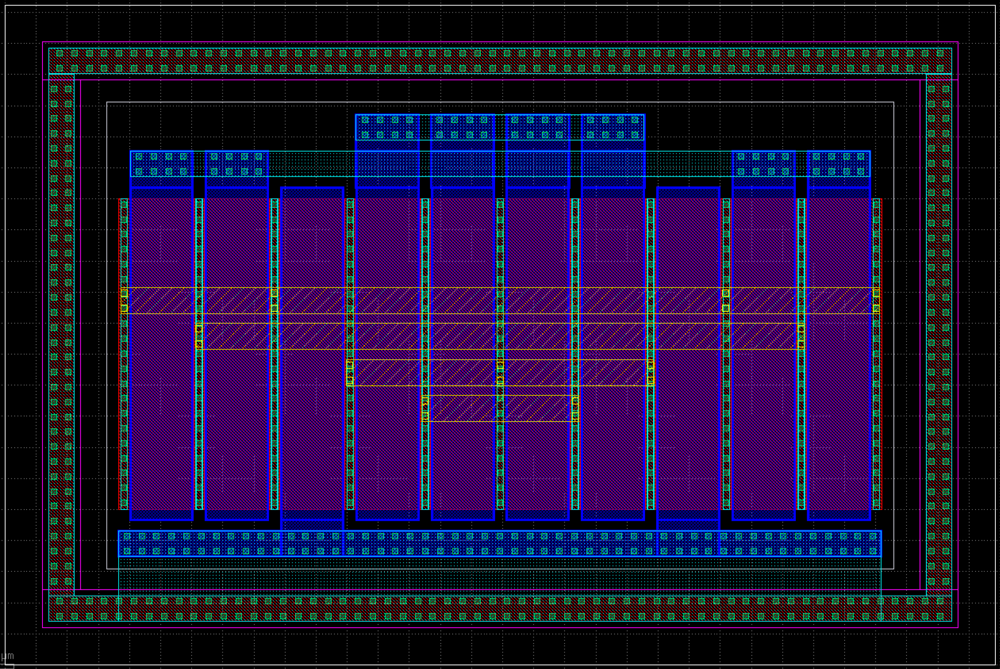
@skip_unless(TED_SKIP_PDK=[HH180])
def test7():
@testbench
def Top():
ABBA_CO(m=2).nguard().route().lvs()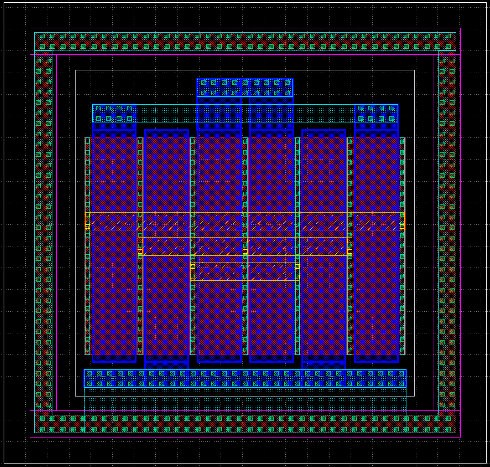
@skip_unless(TED_SKIP_PDK=[HH180])
def test9():
@testbench
def Top():
NMOS_ABBA_CO(m=3).nguard().route().lvs()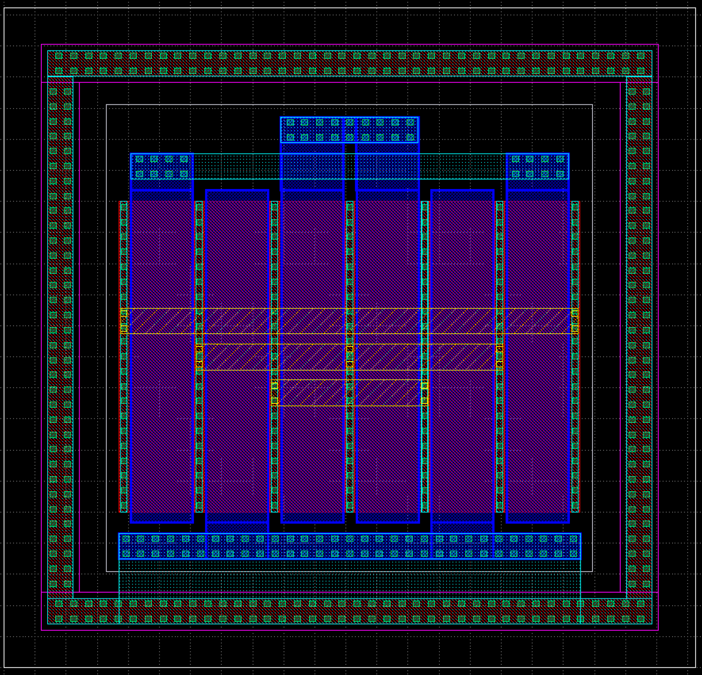
@skip_unless(TED_SKIP_PDK=[HH180])
def test10():
@testbench
def Top():
PMOS_ABBA_CI(m=2).pguard().route().lvs()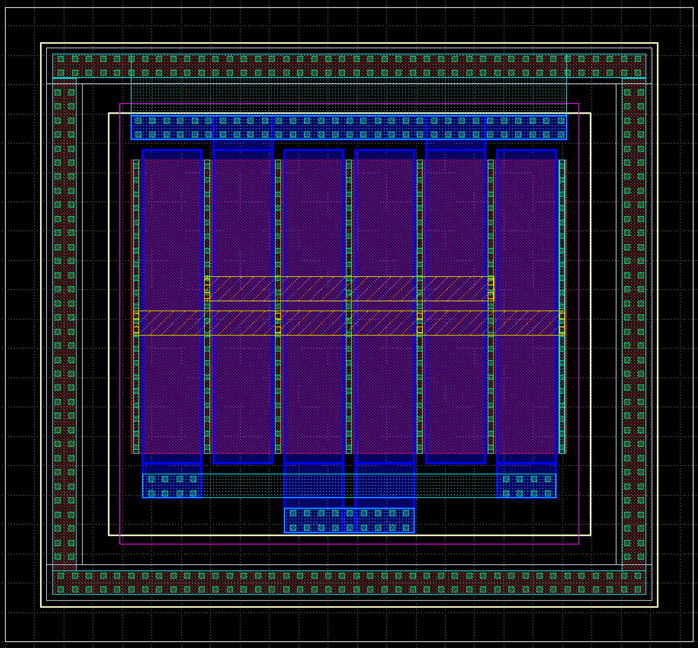
@skip_unless(TED_SKIP_PDK=[HH180])
def test11():
@testbench
def Top():
NMOS_ABBA_CO_VSS(m=5).nguard().route().lvs()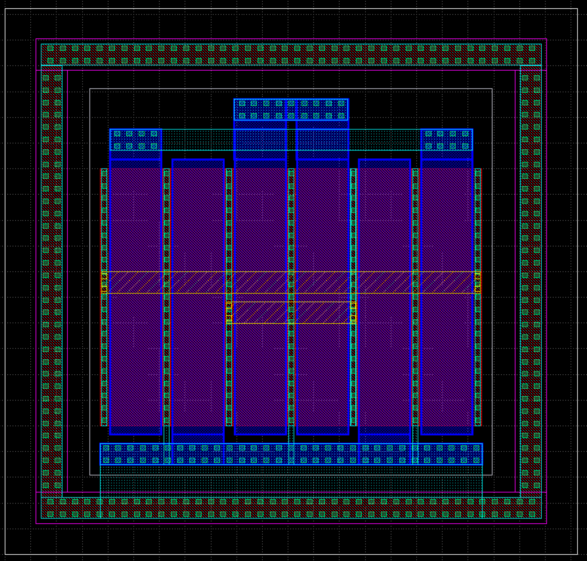
@skip_unless(TED_SKIP_PDK=[HH180])
def test12():
@testbench
def Top():
PMOS_ABBA_CI_VDD(m=4).pguard().route().lvs()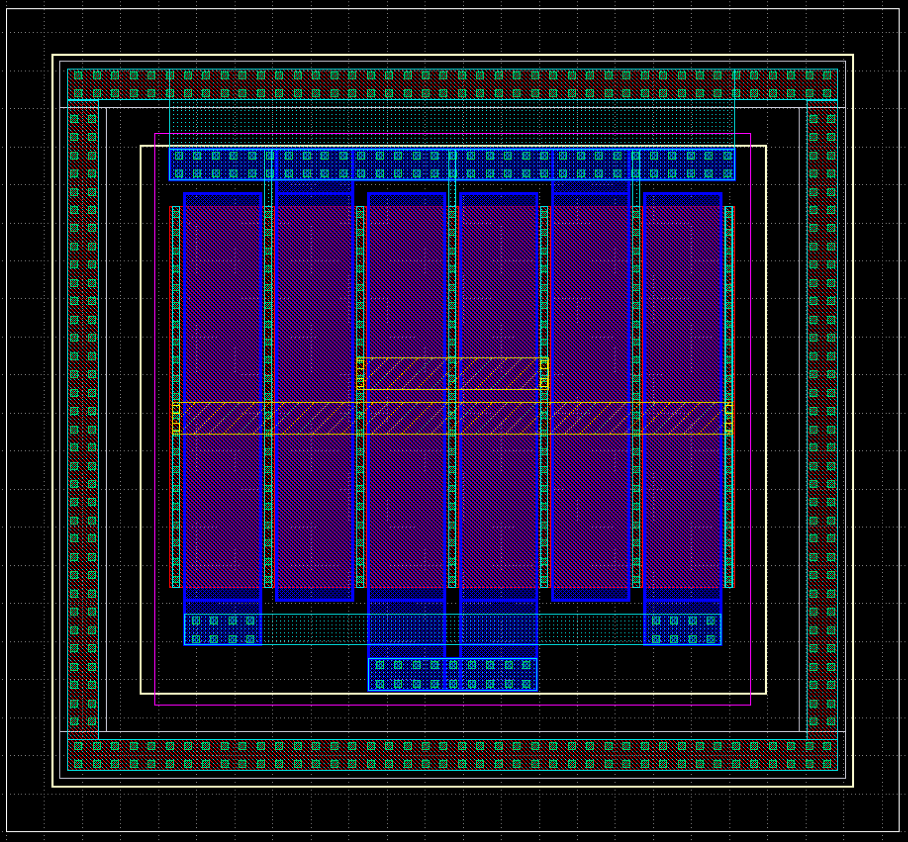
电流镜CurrentMirror
电流镜在模拟电路中应用十分广泛。在传统电路描述中，电流镜往往是以MOSFET为基础单元进行描述。这样的描述方式，其缺点在于不能很好的表征电流镜中多个晶体管之间的尺寸比例关系。在TED中，建议（而非强制）用CurrentMirror来描述电流镜。这样会使得代码更简洁更易读。
理想的电流镜将输入的电流按照设计的比例进行复制，输出电流与输出外接的负载无关，等价于具备无限大的输出电阻。而实际的电流镜输出电阻为有限值。不同类型的电流镜，会提供不同的输出电阻，以及电压摆幅。高输出电阻和电压摆幅的代价往往是电路的复杂性和功耗。
根据要求选择不同结构，输出阻抗一般可以从几百K欧姆到几十M欧姆。
Type 1 单管电流镜
Type 1型电流镜是最简单的电流镜结构，一般用于要求较低的场合，输出阻抗一般为几百K欧姆。
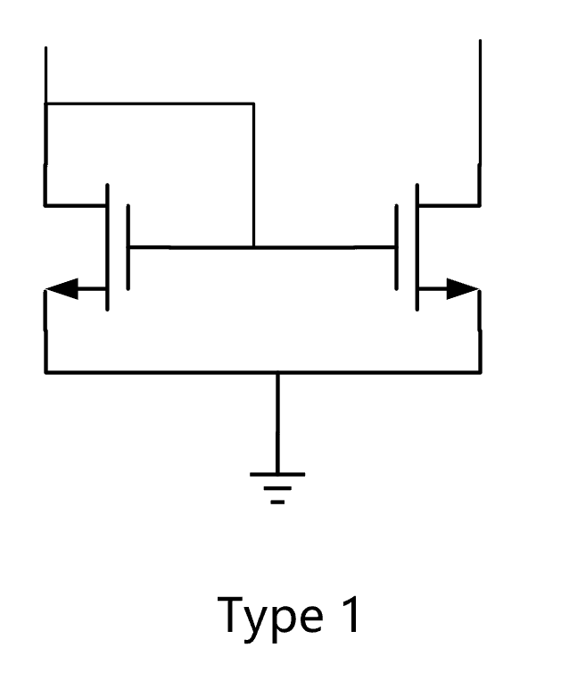
Type 1型电流镜的使用如下：
cm = CurrentMirror(
l=l,
w=w,
m=1,
model="nch",
type="type1",
place_mode=VERTICAL,
from_virtuoso=False,
)
cm.input(Idc)
cm.output(Iout)其中cm = CurrentMirror(l=l, w=w, m=1, model="nch", type="type1")定义了一个Type 1型的N电流镜，并指定其输入管子的l, w和m。
cm.input(Idc)指定了电流镜的输入级连接到Idc节点。cm.output(Iout)指定了输出级连接到Iout节点。
对于一个电流镜而言，只能有一个输入级，但可以有任意多个输出级。因此可以通过cm.output(Iout1), cm.output(Iout2)创建电路的更多输出级。
以上的例子中，实现的是1:1的电流镜。如果要实现其他比例的电流镜，可以通过参数k来指定。
cm.output(Iout1, k=1/2)
cm.output(Iout2, k=2)需要注意的是，在k为非整数的时候，使用者需要保证m*k为整数，其中m在电流镜的初始化时指定。当m*k为非整数时，系统会抛异常。
Type 2 Cascode电流镜
Type 2型电流镜具有较高的输出阻抗，可以达到几十M欧姆。实际应用中在输入摆幅不成为问题（例如电源电压较高）的时候经常使用该结构。但在低压应用中，由于其摆幅较低，常采用Type 3替代。
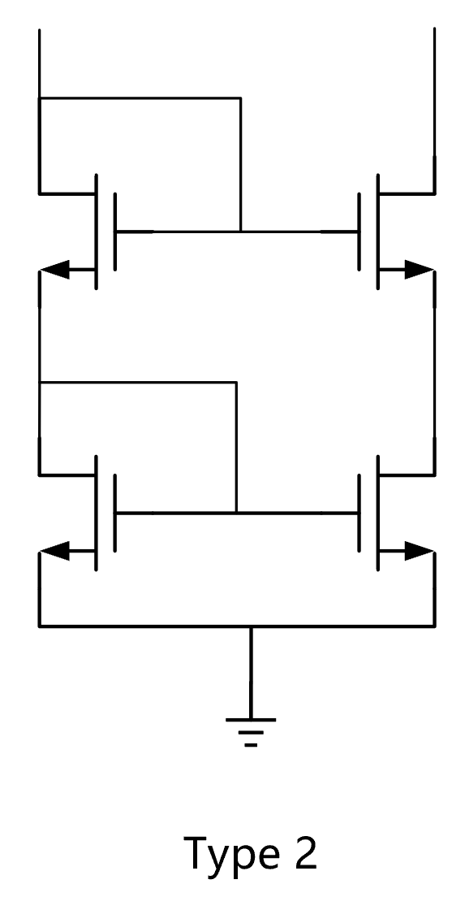
Type 2型电流镜的使用如下：
cm = CurrentMirror(
l=l,
w=w,
m=1,
model="nch",
type="type2",
place_mode=VERTICAL,
from_virtuoso=False,
)
cm.input(Idc)
cm.output(Iout)Type 3 高摆幅电流镜（电阻版）
Type 2型电流镜在摆幅受限的情况下的替代解决方案。其输出阻抗理论上与Type 2相当，实际中往往小于Type 2。此外还有一个缺点在于需要引入电阻导致版图上需要额外的面积。此外相对Type 4+Type5的方案，此类型的电流镜少一条支路，因此功耗方面稍占优势。
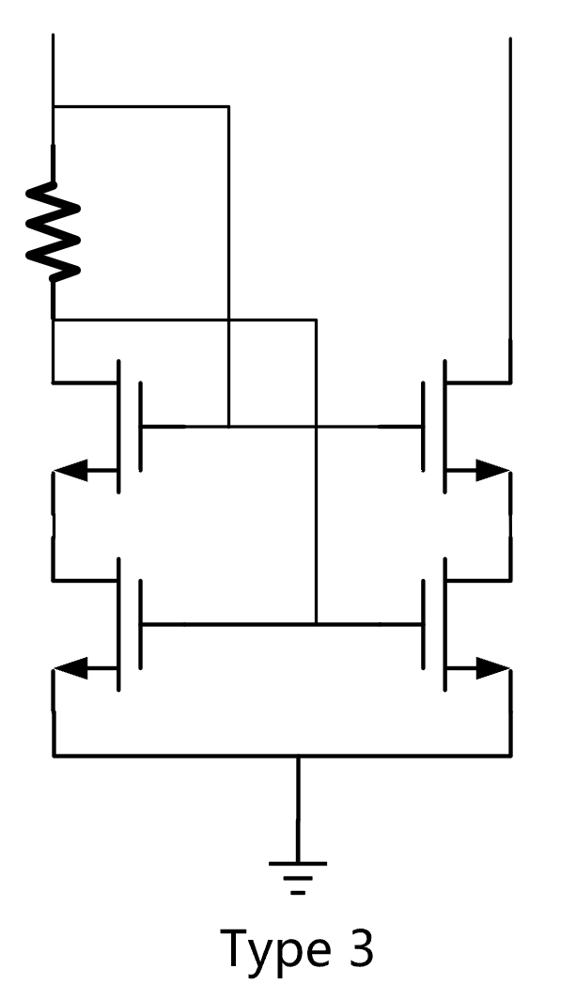
Type 3型电流镜的使用如下：
cm = CurrentMirror(
l=l,
w=w,
m=1,
model="nch",
type="type3",
place_mode=VERTICAL,
from_virtuoso=False,
)
cm.input(Idc)
cm.output(Iout)Type 4+Type 5 高摆幅电流镜（无电阻版）
Type 3电流镜需要引入电阻，为了去除该电阻，可以采用Type 4+Type 5的方案。由Type 4为Type 5提供一个偏置电压X。其缺点在于多了一路Type 4导致功耗有所提高。
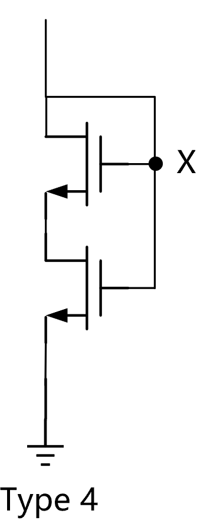
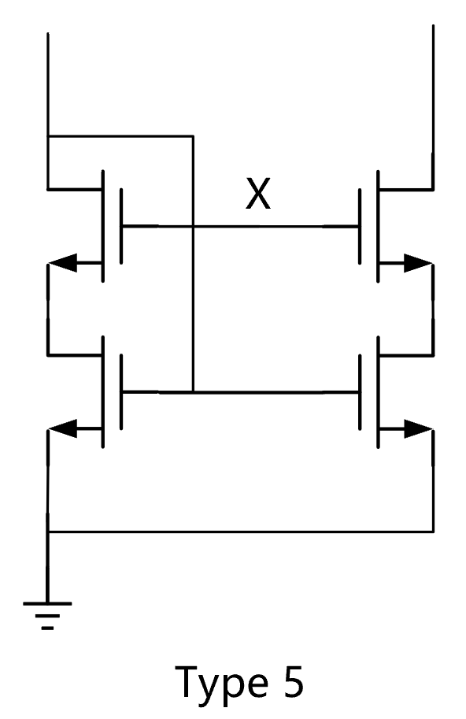
实际应用中，Type 4和Type 5型结合使用的例子如下：
pcm20 = CurrentMirror(
type="type4",
model="pch",
l=[0.2e-6, 1e-6],
w=w,
m=[3, 1],
place_mode=VERTICAL,
).input(VBP)
pcm2 = CurrentMirror(
type="type5", model="pch", l=l, w=w, m=[6, 4], place_mode=VERTICAL
)
pcm2.input(dumy4, VBP, PD=PDB, mid=dumy7)
pcm2.output(VBN, k=1 / 2, single=True)
pcm2.output(dumy8, k=1 / 2, single=True)
pcm2.output(dumy5, m=[3, 3], mid=dumy3)
pcm2.output(VOUT, m=[3, 3], mid=dumy2)对应的电路图
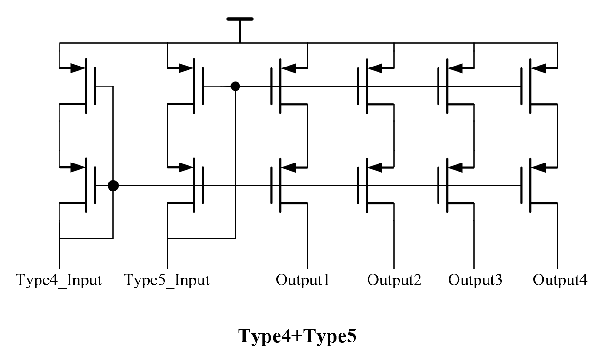
可以看出上面的结构实际上就是一个电流镜。然而在描述中将其视为两个电流镜，其中pcm20描述的是左边的支路，这个“电流镜”只有输入级，没有输出级，其作用在于产生一个合适的偏置给第二支路下面的MOSFET的栅极。之所以采用这样的描述，是为了将电流镜拆解成不可分的基本模块，在实际应用中可以灵活进行组合使用。
版图生成
最简单的情况下，电流镜的版图只需通过
cm_layout = cm.layout()来生成。此时，对于Type 1型电流镜，将生成一行的版图。对于其他类型的电流镜，每一级都有两个MOSFET。此时生成的版图将有两行，分别对应每一级中上下两个MOSFET。返回值为一个Instance，因此可以用于与其他模块进行布局操作。下面给出完整例子：
Type 1型代码如下
l = 2e-6
w = 1e-6
cm = CurrentMirror(
l=l,
w=w,
m=1,
model="nch",
type="type1",
place_mode=HORIZONTAL,
from_virtuoso=False,
)
cm.input(Idc)
cm.output(Iout)
guardring(cm, connectTo=Vss())
place()
route()生成版图如下：
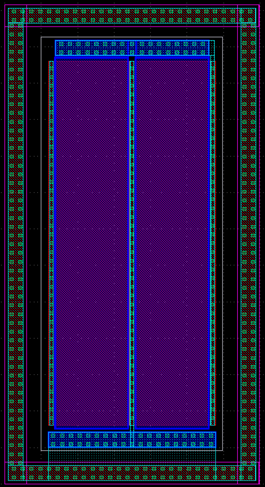
Type 2型代码如下
with setenv(force_on_grid=False):
l = [2e-6, 2e-6]
w = 1e-6
Iout1, Iout2, Iout3 = Iout
cm = CurrentMirror(
l=l,
w=w,
m=1,
model="nch",
type="type2",
place_mode=HORIZONTAL,
from_virtuoso=False,
)
cm.input(Idc)
cm.output(Iout1)
cm.output(Iout2)
cm.output(Iout3)
guardring(cm, connectTo=Vss())
place()
debug("\n".join([str(x) for x in current_module().get_instances()]))
route()生成版图如下：
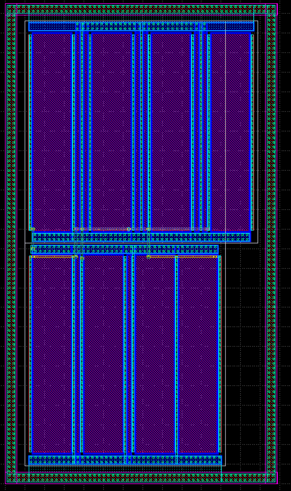
完整的应用电流镜完成运放的设计参考以下例子
from tedcore import *
from ted_device import PMOS, DifferentialPair, CurrentMirror
from layout import *
from algo import *
@module
def CP_OP2(
VINP: Input, VINN: Input, IB40U: Input, PDA: Input, PDB: Input, VOUT: Output
):
with setenv(mos_from_virtuoso=False):
l = [0.2e-6, 0.5e-6]
w = 4e-6
lmin = get_circuit().get_pdk().lmin()
VBP, VBN = Node(2)
n1 = Node(name="n1")
dumy2, dumy3, dumy4, dumy5, dumy7, dumy8, dumy9, dumy11, dumy12, dumy13 = Node(
10
)
pm1 = DifferentialPair(l=500e-9, w=6e-6, model="pch", m=2 * 4)
pm2 = DifferentialPair(l=500e-9, w=4e-6, model="nch", m=2 * 4)
(dumy12, dumy13) >> pm1 % (VINP, VINN) >> dumy8
(dumy3, dumy2) >> pm2 % (VINN, VINP) >> dumy9 # 栅极顺序
pdmos = PMOS(l=lmin, w=2e-6, m=5)
IB40U >> (pdmos % PDA) >> n1
pdmos = layout_mos([pdmos])
ncm1 = CurrentMirror(
type="type3", model="nch", l=l, w=w, m=2, place_mode=VERTICAL
)
ncm1.input(n1, PD=PDA, mid=dumy11) # 40u
ncm1.output(VBP, k=1 / 2) # 20u
ncm1.output(dumy4, k=1) # 40u
ncm1.output(dumy9, k=1 / 2, single=True) # 20u
# region cm_type45
pcm20 = CurrentMirror(
type="type4",
model="pch",
l=[0.2e-6, 1e-6],
w=w,
m=[3, 1],
place_mode=VERTICAL,
).input(VBP)
pcm2 = CurrentMirror(
type="type5", model="pch", l=l, w=w, m=[6, 4], place_mode=VERTICAL
)
pcm2.input(dumy4, VBP, PD=PDB, mid=dumy7)
pcm2.output(VBN, k=1 / 2, single=True)
pcm2.output(dumy8, k=1 / 2, single=True)
pcm2.output(dumy5, m=[3, 3], mid=dumy3)
pcm2.output(VOUT, m=[3, 3], mid=dumy2)
# endregion cm_type45
ncm30 = CurrentMirror(
type="type4",
model="nch",
l=[0.2e-6, 3e-6],
w=w,
m=[2, 1],
place_mode=VERTICAL,
).input(
VBN
) # 一个管子为3u
ncm3 = CurrentMirror(
type="type5", model="nch", l=l, w=w, m=[2, 2], place_mode=VERTICAL
)
ncm3.input(dumy5, VBN, mid=dumy12).output(VOUT, mid=dumy13)
pmosPair = guardring(pm1, Vdd())
nmosPair = guardring(pm2, Vss())
col(
# ports,
guardring(
row(
col(
pcm2.get_row(1),
row(pdmos, pcm2.get_row(0, flip=True)),
),
pcm20.col(),
),
connectTo=Vdd(),
),
row(pmosPair, nmosPair, align=MIDDLE),
guardring(
row(
ncm1.rpoly,
ncm30.col(),
ncm3.col(),
ncm1.col(),
),
connectTo=Vss(),
),
)
with setenv(via_min_number=1):
place()
route(allow_poly_route=True)
current_module().expose_all_ports()版图如下图所示。其中(a)为t65工艺下工程师手工画的版图。其余版图为上述代码在不同工艺下自动生成的版图。版图中A和B部分主要为N型和P型的电流镜。
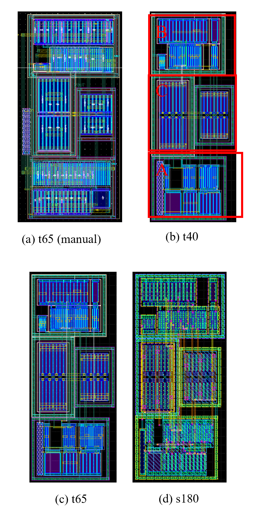
三极管BJT
dut = BJT_base()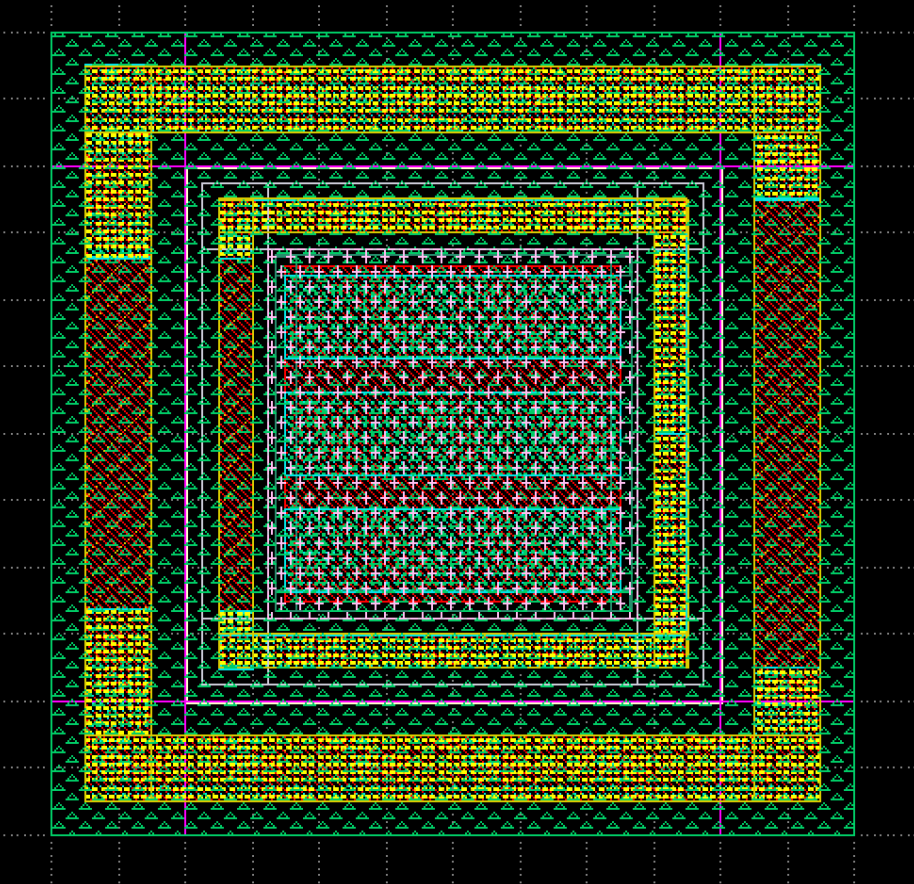
from ted_device.components import BJT
c = Vss()
b = Vss()
q1 = (c, b, "e1") >> BJT()
q2 = [((c, b, "e2") >> BJT()) for _ in range(8)]
col(
row(q2[0], q2[1], q2[2]),
row(q2[3], q1, q2[4]),
row(q2[5], q2[6], q2[7]),
)
place()
route()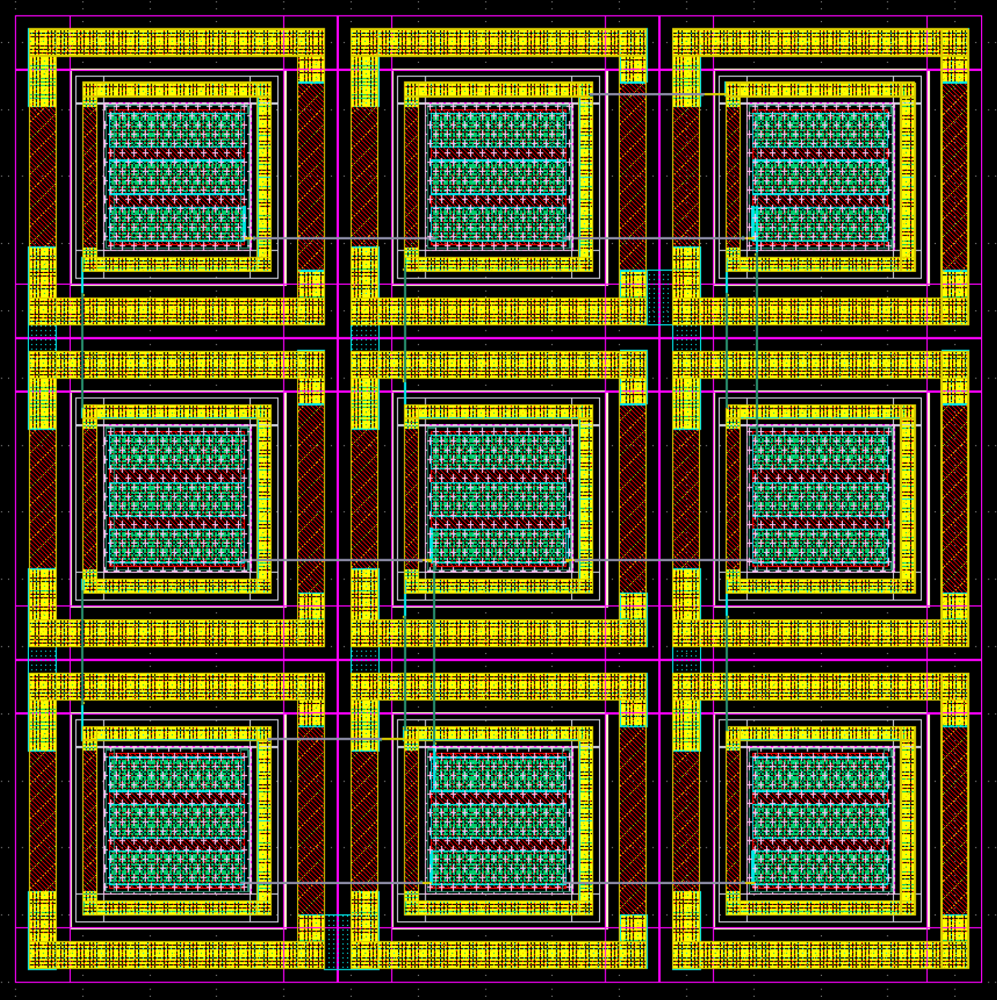
D = Diode
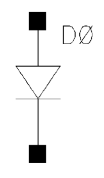
Diode器件源代码：
a >> Diode() >> b内建电路模块
内置元器件，如电阻，电容，电压源，电流源等，是TED中最底层的元器件。这些元器件直接对应仿真器中支持的元器件，并且这些元器件只有电学特性，而没有任何物理实现，因此可以并且只能用于电路仿真。
由于不对应具体的物理实现，这些内置元器件在有意义的电路描述的结构描述中一般不会直接使用，一般在以下场合使用
testbench或者生成器的wrapper中作为激励信号或者负载
生成器中作为电流源或者负载
在具有物理实现的模块实底层，会调用这些内置元器件，使得该模块可以支持仿真。
Mos管Mosfet
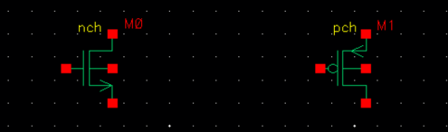
Mosfet器件源代码：
@moduledef(module_type="sim")
def Mosfet(
d: Input,
g: Input,
s: Input,
b: Input,
model: str = "nch",
l: Union["Variable", float] = 1e-6,
w: Union["Variable", float] = 5e-6,
nf: Union["Variable", int] = None,
m: Union["Variable", int] = None,
):
from ted_device import check_mosfet
assert m == None or nf == None, f"Cannot specify both m({m}) and nf({nf})."
if nf == None:
nf = 1
if m == None:
m = nf
unit = get_circuit().get_pdk().get_scale_unit()
l = convert_unit1_to_unit2(l, 1, unit)
w = convert_unit1_to_unit2(w, 1, unit)
check_mosfet(model, round(l / 1e-9), round(w / 1e-9))
model = get_pdk().get_sim_original_model(model)
simulator = getenv("simulator")
initial = get_pdk().get_sim_initial(model, simulator)
lpeparams = get_pdk().get_all_lpe_params(l=l, w=w, model=model)
helper(initial, l, w, m, model, **lpeparams)
current_module().set_builtin_sim()
"""使用示例：("a", "b", "c", Vss()) >> Mosfet()"""其中(d, g, s, b) 代表Mosfet器件输入端，分别为漏极，栅极，源极，衬底 需要按输入顺序写入 (model = "nch", l = 1e-6, w = 5e-6) 代表模型为"nch" 也可写成"pch" l为mosfet栅长 w为mosfet栅宽 如果不声明默认为 l = 1e-6, w = 5e-6
电压源VSource
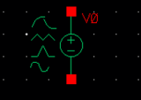
VSource器件源代码：
@module
def VSource(a, b, dc=0, ac=None, mode=None, model="vsource", **kwargs):
"""使用示例：(a, b) >> VSource(dc=1.2)"""
setup_builtin("v", model, get_source_paramstr(dc=dc, ac=ac, mode=mode, **kwargs))
current_module().set_builtin_lvs_and_sim()(a, b) 代表器件两端连接点 (dc = 1.2) 代表电压源默认直流电压为1.2V
若需要使用交流源, 则设置参数ac的值, 示例如下：
(a,b) >> Vsource(ac=1)通过对参数mode赋值，可以切换为不同的激励源，详见本文激励源一节。
电流源ISource
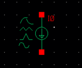
ISource器件源代码：
@module
def ISource(a, b, dc=0, ac=0, model="isource", mode=None, **kwargs):
setup_builtin(
"i",
model,
get_source_paramstr(dc=dc, ac=ac, mode=mode, **kwargs),
is_lvs=True,
is_sim=True,
)
current_module().set_builtin_lvs_and_sim()
"""使用示例：(a, b) >> ISource(dc = 1.0)"""(a, b) 代表器件两端连接点 (dc = 1.2) 代表电流源默认直流电流为1A 在搭建Testbench时需注意电流流向方向 例如 (a, Vss()) >> ISource(dc = 1.0) 表示电流从a流向地 (Vss(), b) >> ISource(dc = 1.0) 表示电流从地流向b
电流探测器IProbe
IProbe器件源代码：
@module
def IProbe(a, b, r=1.0, model="iprobe"):
# current_module().set_param(r=float(r))
simulator = get_simulator()
if simulator in ["spectre", "alps", "spectremdl"]:
setup_builtin("i", model, is_lvs=True, is_sim=True)
else:
raise Exception(f"{simulator}Emulator not supportedIProbe")
current_module().set_builtin_lvs_and_sim()
""" 使用示例：
(a, b) >> IProbe().rename("probe1")
watch(probe1:in)
"""电阻Resistor
![Resistor]()
Resistor器件源代码：
@module
def Resistor(a, b, r=1.0, model="resistor", modelstr=None):
if modelstr is None:
modelstr = f"r='{r}'"
setup_builtin("r", model, modelstr, r=float(r), is_lvs=True, is_sim=True)
# current_module().set_builtin_lvs_and_sim()
"""使用示例：(a, b) >> Resistor(r = 1e3)"""(a, b) 代表器件两端连接点 (r = 1.0e3) 代表电阻默认阻值为1k 因为电阻为无源器件所以不必注意连接顺序
电容Capacitor
![Capacitor]()
Capacitor器件源代码：
@moduledef(module_type="sim")
def Capacitor(a, b, c=1.0e-12, model="capacitor", **kwargs):
from pyted import Variable
num = float(c.eval()) if isinstance(c, Variable) else float(c)
setup_builtin("c", model, f"c='{c}'", c=num, is_sim=True)
"""使用示例：(a, b) >> Capacitor(c = 1e-12)"""(a, b) 代表器件两端连接点 (c = 1e-12) 代表电容默认容值为1p
电感Inductor
![Inductor]()
Inductor器件源代码：
@module
def Inductor(a, b, l=1.0, model="inductor"):
# current_module().set_param(r=float(r))
setup_builtin("l", model, f"l={l}", l=float(l), is_lvs=True, is_sim=True)
# current_module().set_builtin_lvs_and_sim()
"""使用示例：(a, b) >> Inductor(l = 1e-9)"""(a, b) 代表器件两端连接点 (l = 1e-9) 代表电感默认感值为1nH 因为电阻为无源器件所以不必注意连接顺序
子电路Subckt
当TED的内置元件无法满足用户需求时，可以使用Subckt来自定义构建器件，这些器件必须是工艺库或理想器件库中具备的。所构建的器件依然只支持仿真，没有物理实现。
subckt器件源代码：
def Subckt(*args, model=None, **kwargs):
from tedcore import Module
from tedcore import find_frame
assert model is not None
def func(*args):
find_frame()
setup_builtin("x", model, "", **kwargs, is_lvs=True, is_sim=True)
terminals = (
[f"n{k}" for k, n in enumerate(args)],
["Input" for k, n in enumerate(args)],
[1 for k, n in enumerate(args)],
)
model = get_model(model)
inst = Module.build(model, None, func, terminals, None, is_testbench=False)
inst.set_paramstr(" ".join(f"{k}={v}" for k, v in kwargs.items()))
args >> inst
inst.get_module().set_builtin_lvs_and_sim()
return instSubckt使用方法
Subckt(*args,model="",**kwargs)这里的Subckt可以用X来替代，下列用法与上述等价：
X(*args,model="",**kwargs)参数说明
| 名称 | 说明 | 默认值 |
|---|---|---|
| args | 所有输入的可变参数均会被视为器件的节点，要求传入顺序与所调用的模型节点顺序一致。 | -- |
| model | 选用的器件模型 | -- |
| kwargs | 除model外，所有的关键字参数都会被视为器件的参数，根据需要输入相应的器件参数即可 | -- |
示例
例1：需要调用一个工艺电阻, 该电阻的模型为"rppolywo", 所需要的参数有"l=2e-06, w=4e-06, m=1", 电阻两端分别接到节点"net1"和节点"net2", 因此通过Subckt调用的方式如下：
net1,net2 = Node(2)
Subckt(net1, net2, model="rppolywo", l=2e-06, w=4e-06, m=1)压控电压源VCVS
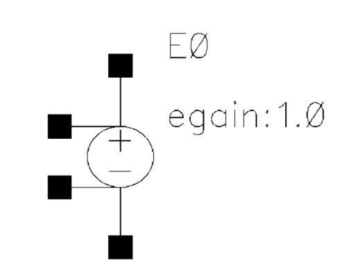
VCVS（压控电压源）器件源代码：
@module
def VCVS(a, b, c, d, model="vcvs", gain=1.0):
setup_builtin("e", model, f"gain={gain}", is_lvs=True, is_sim=True)
# current_module().set_builtin_lvs_and_sim()
"""使用示例：(a, b, c, d) >> VCVS(gain = 1.0)"""压控电流源VCCS
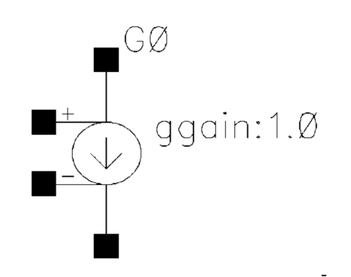
VCCS（压控电流源）器件源代码：
@module
def VCCS(a, b, c, d, model="vccs", gm=1.0):
setup_builtin("g", model, f"gm={gm}", is_lvs=True, is_sim=True)
"""使用示例：(a, b, c, d) >> VCCS(gm = 1.0)"""流控电压源CCVS
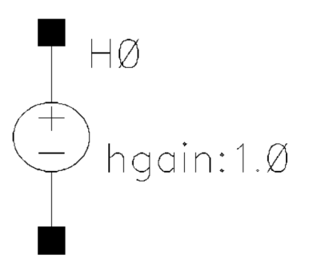
CCVS（流控电压源）器件源代码：
@module
def CCVS(a, b, model="ccvs", rm=1.0, probe=""):
setup_builtin("h", model, f"rm={rm} probe={probe}", is_lvs=True, is_sim=True)
# current_module().set_builtin_lvs_and_sim()
"""使用示例：(a, b, c, d) >> CCVS(rm = 1.0)"""流控电流源CCCS
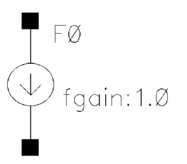
CCCS（流控电流源）器件源代码：
@module
def CCCS(a, b, model="cccs", gain=1.0, probe=""):
setup_builtin("f", model, f"gain={gain} probe={probe}", is_lvs=True, is_sim=True)
# current_module().set_builtin_lvs_and_sim()
"""使用示例：(a, b, c, d) >> CCCS(gain = 1.0)"""理想开关
IdealSwitch(理想开关)源代码：
@module
def IdealSwitch(a, b, ps, ns, model="_ideal_switch_", modelstr: str = "", **kwargs):
setup_builtin("x", model, modelstr=modelstr, is_lvs=True, is_sim=True)
# current_module().set_builtin_lvs_and_sim()示例
@skip_unless(simulator="spectre")
def test_switch():
@testbench
def TestIdealSwitch():
(Vdd(), Vss()) >> VSource(dc=1)
(Vdd(), "a") >> Resistor(r=100)
(Vss(), "b") >> Resistor(r=100)
("a", "b", "vctrl", Vss()) >> IdealSwitch(name="vswitch")
period = 1e-8
Clock(period=period) >> "vctrl"
watch("vctrl")
new_figure()
watch("a", "b")
raw = tran(stop=2 * period)
va = raw.sample("a", period / 4, period / 2)
vb = raw.sample("b", period / 4, period / 2)
debug(va)
debug(vb)
assert T.max(T.abs(va - np.array([0.5, 1, 0.5, 1]))) < 1e-2
assert T.max(T.abs(vb - np.array([0.5, 0, 0.5, 0]))) < 1e-2
raw.show()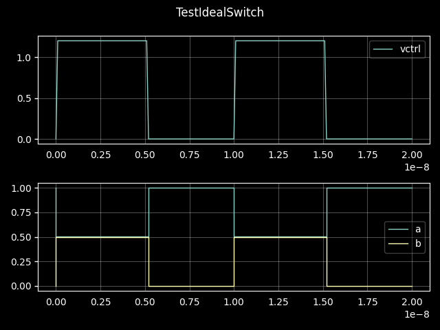
激励源
当VSource ( 有关VSource的说明可查看本文的VSource一节 ) 的mode参数赋值时，会变成不同的激励源，下表列出了mode参数的可选值。
| 可选值 | 说明 |
|---|---|
| pulse | 脉冲电压源 |
| pwl | 分段线性电压源 |
| prbs | 伪随机二进制序列源 |
| sine | 正弦波 |
当mode参数赋值后，除了mode外任何的关键字参数输入均会被视为激励的器件参数。
以下给出了上述4种激励的设置方式和仿真结果：
pulse
下表给出了当VSource设置为pulse时可输入的关键字参数。
| 参数 | 说明 | 默认值 |
|---|---|---|
| period | 信号周期，不可缺省 | -- |
| width | 波形宽度 | period/2 |
| val0 | 低电平值 | 0 |
| val1 | 高电平值 | 1 |
| rise | 上升时间 | 1e-10 |
| fall | 下降时间 | 1e-10 |
| delay | 延迟 | 0 |
示例
def test_source():
@testbench
def test_vs():
vout = Node()
(vout, Vss()) >> VSource(mode="pulse", period=10e-6)
C(vout, Vss(), c=1e-15)
raw = tran(stop=50e-6)
watch(vout)
raw.show()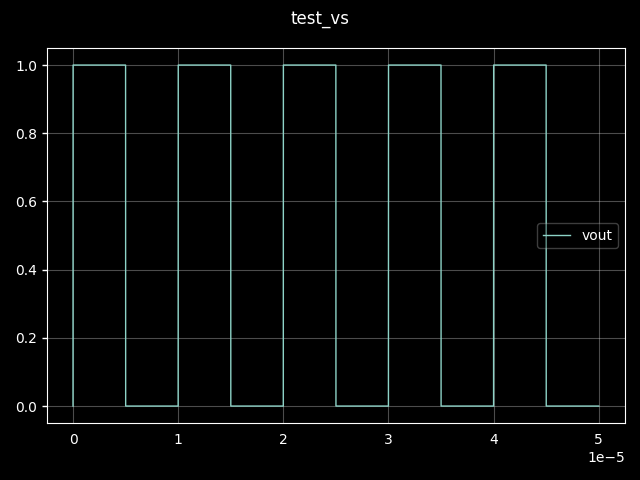
pwl
下表给出了当VSource设置为pwl时可输入的关键字参数。
| 参数 | 说明 | 默认值 |
|---|---|---|
| time | 设置时间点, 不可缺省。值类型为列表，列表元素为str或float | -- |
| v | 设置时间点对应的电压值，不可缺省。值类型为列表，列表元素为str或float | -- |
示例
def test_source():
@testbench
def test_vs():
vout = Node()
(vout, Vss()) >> VSource(
mode="pwl",
time=[0, "1n", "1.01n", "10n", "10.01n"],
v=[0, 0, 1, 1, 0],
)
C(vout, Vss(), c=1e-15)
raw = tran(stop=15e-9)
watch(vout)
raw.show()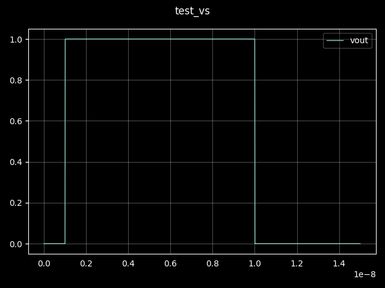
prbs
下表给出了当VSource设置为prbs时可输入的关键字参数。
| 参数 | 说明 | 默认值 |
|---|---|---|
| period | 信号周期，不可缺省 | -- |
| val0 | 低电平值 | 0 |
| val1 | 高电平值 | 1 |
| rise | 上升时间 | 1e-10 |
| fall | 下降时间 | 1e-10 |
| delay | 延迟 | 0 |
| seed | prbs初始值中高电平的位置 | 0 |
示例
def test_source():
@testbench
def test_vs():
vout = Node()
(vout, Vss()) >> VSource(
mode="prbs",
period=10e-9,
seed=1,
)
C(vout, Vss(), c=1e-15)
raw = tran(stop=100e-9)
watch(vout)
raw.show()当seed=1时：
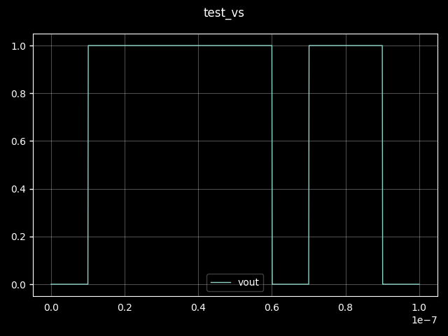
当seed=3时：
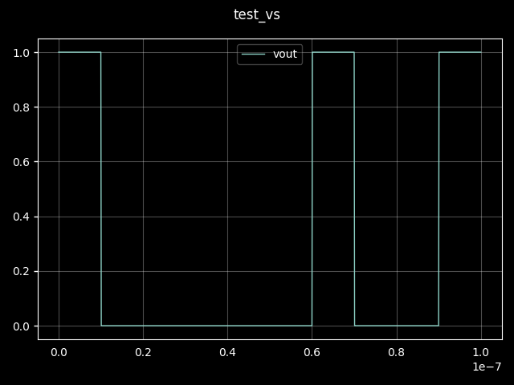
sine
下表给出了当VSource设置为sine时可输入的关键字参数。
| 参数 | 说明 | 默认值 |
|---|---|---|
| dc | 直流分量 | 0 |
| amp | 频率幅值，不可缺省 | -- |
| freq | 信号频率，不可缺省 | -- |
| delay | 延迟 | 0 |
示例
def test_source():
@testbench
def test_vs():
vout = Node()
(vout, Vss()) >> VSource(mode="sine", dc=2, amp=1, freq=100e3)
C(vout, Vss(), c=1e-15)
raw = tran(stop=100e-6)
watch(vout)
raw.show()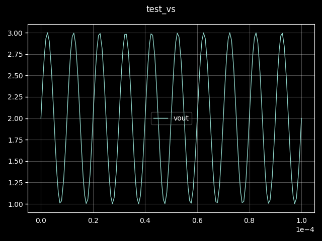
使用analogLib库模型
from_analogLib()介绍
TED支持从virtuoso的analogLib库读取模型并使用，通过APIfrom_analogLib()实现。下面是from_analogLib()的参数展示和说明。
def from_analogLib(
number_of_ports, model="", model_str: str = "", model_par: Dict = {}, **kwargs
):
"""
pwl = from_analogLib(
2, model="vsource", type="pwl", wave="[ 0 -2 50u -2 50.01u 0 ]"
)
(a,b)>>pwl
"""| 参数 | 说明 | 类型 | 默认值 |
|---|---|---|---|
| number_of_ports | 声明器件的端口数并且所有端口类型均为Input。生成的端口顺序与调用的模型端口顺序一致 | int | -- |
| model | 指定调用的模型，取值为analogLib中的模型名称 | str | -- |
| model_str | 将模型的参数以字符串的形式传入 | str | -- |
| model_par | 将模型的参数以字典的形式传入 | dict | -- |
| kwargs | 将模型的参数以关键字参数形式传入 | key=value | -- |
模型的参数传入可以通过model_str、model_par和以关键字参数形式传入，在生成网表时没有任何区别，用户习根据惯选择其中一种方式即可。三者的使用方式如下所示:
pwm = from_analogLib(2, model="vsource", type="pwl", wave="[ 0 -2 50u -2 50.01u 0 ]")
pwm = from_analogLib(2, model="vsource", model_str="type=pwl wave=[ 0 0 1u 0 1.01u 1 10u 1 10.01u 0 ]")
pwm = from_analogLib(2, model="vsource", model_par={"type":"pwl","wave":"[ 0 0 1u 0 1.01u 1 10u 1 10.01u 0 ]"})示例
例1：从analogLib库中调用一个pwl源。
def test_from_analogLib():
@testbench
def test_Top():
vpwl = from_analogLib(
2,
model="vsource",
type="pwl",
wave = "[ 0 0 1u 0 1.01u 1 10u 1 10.01u 0 ]",
)
("vout", Vss()) >> vpwl
watch("vout")
raw = tran(stop=20e-6)
raw.show()注: from_analogLib()与Subckt()的功能类似，只是用法不同，部分场景下使用from_analogLib()更好，例如当模型的参数含有python关键字时，此时应使用from_analogLib()的model_str或model_par模式进行参数赋值。
行为级模型
行为级模型（behavioral models）是从元器件的电学工作特性出发，把元器件看成“黑盒子”，测量其端口的电气特性，提取的器件模型，即可以用公式来描述器件的工作特性。
行为级模型库介绍
TED中构建了许多行为级模型存放在behavior项目中，不同种类的行为级模型如下所示。
基本逻辑门
| 名称 | 说明 | 使用方法 | 使用说明 |
|---|---|---|---|
| And2 | 二输入与门 | (A, B) >> And2() >> vout | - |
| And3 | 三输入与门 | (A, B, C) >> And3() >> vout | - |
| And4 | 四输入与门 | (A, B, C, D) >> And4() >> vout | - |
| Or2 | 二输入或门 | (A, B) >> Or2() >> vout | - |
| Or3 | 三输入或门 | (A, B, C) >> Or3() >> vout | - |
| Or4 | 四输入或门 | (A, B, C, D) >> Or4() >> vout | - |
| Nand2 | 二输入与非门 | (A, B) >> Nand2() >> vout | - |
| Nand3 | 三输入与非门 | (A, B, C) >> Nand3() >> vout | - |
| Nand4 | 四输入与非门 | (A, B, C, D) >> Nand4() >> vout | - |
| Nor2 | 二输入或非门 | (A, B) >> Nor2() >> vout | - |
| Nor3 | 三输入或非门 | (A, B, C) >> Nor3() >> vout | - |
| Nor4 | 四输入或非门 | (A, B, C, D) >> Nor4() >> vout | - |
| Xor2 | 二输入异或门 | (A, B) >> Xor2() >> vout | - |
| Xor3 | 三输入异或门 | (A, B, C) >> Xor3() >> vout | - |
| Xor4 | 四输入异或门 | (A, B, C, D) >> Xor4() >> vout | - |
| Xnor2 | 二输入同或门 | (A, B) >> Xnor2() >> vout | - |
| Mx2 | 二输入复用器 | (A, B) >> Mx2() % S0 >> vout | - |
| Mx4 | 四输入复用器 | (A, B, C, D) >> Mx4() % (S0, S1) >> vout | - |
| Mxi2 | 反向输出的二输入复用器 | (A, B) >> Mxi2() % S0 >> vout | - |
| Mxi4 | 反向输出的四输入复用器 | (A, B, C, D) >> Mxi4() % (S0, S1) >> vout | - |
上述逻辑门有着相同的可选参数，分别是tplh 、tphl、 tr、 tf和jitter，具体的参数说明如下：
| 名称 | 说明 | 默认值 | 可选范围 |
|---|---|---|---|
tplh | Propagation delay for rising output | 10e-12 | (0, inf) |
tphl | Propagation delay for falling output | 10e-12 | (0, inf) |
tr | Rising time | 10e-12 | (0, 2*tplh] |
tf | Falling time | 10e-12 | (0, 2*tphl] |
jitter | Synchrnous jitter at the output | 0 | [0, min(tplh,tphl)] |
触发器
| 名称 | 说明 | 使用方法 | 使用说明 |
|---|---|---|---|
| Dff | D触发器 | A >> Dff() % clk >> (q, qbar) | - |
| Jkff | JK触发器 | A >> Jkff() % clk >> (q, qbar) | - |
| Rsff | RS触发器 | (S, R) >> Rsff() >> (q, qbar) | - |
上述触发器相同的可选参数分别是vlogic_high 、vlogic_low、 vtrans、 tdel、trise和tfall。D触发器还有额外的参数vtrans_clk。所有的参数说明如下：
| 名称 | 说明 | 默认值 | 可选范围 |
|---|---|---|---|
vlogic_high | Output voltage for high | 1.2 | 依实际需求 |
vlogic_low | Output voltage for low | 0 | 依实际需求 |
vtrans | Voltages above this at input are considered high | 0.6 | 依实际需求 |
tdel | Delay time | 0 | 依实际需求 |
trise | Rising time | 10e-12 | 依实际需求 |
tfall | Falling time | 10e-12 | 依实际需求 |
vtrans_clk | transition voltage of clock (only Dff) | 0.6 | 依实际需求 |
缓冲器
| 名称 | 说明 | 使用方法 | 使用说明 |
|---|---|---|---|
| Buf | 缓冲器 | in >> Buf() >> vout | - |
可选参数说明
| 名称 | 说明 | 默认值 | 可选范围 |
|---|---|---|---|
tplh | Propagation delay for rising output | 10e-12 | (0, inf) |
tphl | Propagation delay for falling output | 10e-12 | (0, inf) |
tr | Rising time | 10e-12 | (0, 2*tplh] |
tf | Falling time | 10e-12 | (0, 2*tphl] |
jitter | Synchrnous jitter at the output | 0 | [0, min(tplh,tphl)] |
比较器
| 名称 | 说明 | 使用方法 | 使用说明 |
|---|---|---|---|
| Cmp | 比较器 | (in, vref) >> Cmp() >> vout | - |
可选参数说明
| 名称 | 说明 | 默认值 | 可选范围 |
|---|---|---|---|
sigout_high | Output voltage for high | 10 | 依实际需求 |
sigout_low | Output voltage for low | -10 | 依实际需求 |
sigin_offset | Input offset voltage | 0 | 依实际需求 |
comp_slope | Comparator slope | 1000 | 依实际需求 |
反相器
| 名称 | 说明 | 使用方法 | 使用说明 |
|---|---|---|---|
| Inv | 反相器 | in >> Inv() >> vout | - |
可选参数说明
| 名称 | 说明 | 默认值 | 可选范围 |
|---|---|---|---|
tplh | Propagation delay for rising output | 10e-12 | (0, inf) |
tphl | Propagation delay for falling output | 10e-12 | (0, inf) |
tr | Rising time | 10e-12 | (0, 2*tplh] |
tf | Falling time | 10e-12 | (0, 2*tphl] |
jitter | Synchrnous jitter at the output | 0 | [0, min(tplh,tphl)] |
锁存器
| 名称 | 说明 | 使用方法 | 使用说明 |
|---|---|---|---|
| Dlatch | 锁存器 | D >> Dlatch() % EN >> (QP, QN) | - |
可选参数说明
| 名称 | 说明 | 默认值 | 可选范围 |
|---|---|---|---|
tdplhqp | Prop delay for D->QP, L->H | 100e-12 | (0, inf) |
tdphlqp | Prop delay for D->QP, H->L | 100e-12 | (0, inf) |
tdplhqn | Prop delay for D->QN, L->H | 100e-12 | (0, inf) |
tdphlqn | Prop delay for D->QN, H->L | 100e-12 | (0, inf) |
tr | Output rising time | 10e-12 | (0, 2*min(tdplhqp,tdplhqn)] |
tf | Output falling time | 10e-12 | (0, 2*min(tdphlqp,tdphlqn)] |
jitter | Synchrnous jitter at the output | 0 | [0, min(min(tdplhqp,tdplhqn)-tr/2,min(tdphlqp,tdphlqn)-tf/2)] |
运算放大器
| 名称 | 说明 | 使用方法 | 使用说明 |
|---|---|---|---|
| Opamp | 运放 | (vip, vin, vref) >> Opamp() >> vout | 无法执行AC仿真； vref端口必须声明，但可不接任何信号 |
可选参数说明
| 名称 | 说明 | 默认值 | 可选范围 |
|---|---|---|---|
gain | Gain | 835e3 | 依实际需求 |
freq_unitygain | Frequency at unity gain | 1.0e6 | 依实际需求 |
rin | Input resistance | 1e6 | 依实际需求 |
vin_offset | Input voltage offset | 0.0 | 依实际需求 |
ibias | Input bias current | 0.0 | 依实际需求 |
iin_max | Maximum current | 100e-6 | 依实际需求 |
slew_rate | Slew rate | 0.5e6 | 依实际需求 |
rout | Output resistance | 80 | 依实际需求 |
vsoft | Soft output limiting value | 0.5 | 依实际需求 |
DAC
| 名称 | 说明 | 使用方法 | 使用说明 |
|---|---|---|---|
| Dac_8bit | 8位DAC | vin >> Dac_8bit() >> vout | vin = Node(8) |
可选参数说明
| 名称 | 说明 | 默认值 | 可选范围 |
|---|---|---|---|
vref | Reference voltage that conversion is with respect to | 1.2 | 依实际需求 |
vtrans | Transition voltage | 0.6 | 依实际需求 |
trise | Rise time | 0 | 依实际需求 |
tfall | Fall time | 0 | 依实际需求 |
tdel | Delay time | 0 | 依实际需求 |
ADC
| 名称 | 说明 | 使用方法 | 使用说明 |
|---|---|---|---|
| Adc_8bit | 8位ADC | vin >> Adc_8bit() >> vout | vout = Node(8) |
可选参数说明
| 名称 | 说明 | 默认值 | 可选范围 |
|---|---|---|---|
trise | Rise time | 0 | 依实际需求 |
tfall | Fall time | 0 | 依实际需求 |
tdel | Delay time | 0 | 依实际需求 |
vlogic_high | Output voltage for high | 1.2 | 依实际需求 |
vlogic_low | Output voltage for low | 0 | 依实际需求 |
vtrans_clk | Clock transition voltage | 0.6 | 依实际需求 |
vref | Voltage that voltage is done with respect to | 1.2 | 依实际需求 |
电荷泵
| 名称 | 说明 | 使用方法 | 使用说明 |
|---|---|---|---|
| Cp | 电荷泵 | (siginc, sigdec) >> Cp( ) >> (vout, vsrc) | vout:电荷泵输出; vsrc:必须声明但可悬空 |
可选参数说明
| 名称 | 说明 | 默认值 | 可选范围 |
|---|---|---|---|
trise | Rise time | 1e-9 | 依实际需求 |
tfall | Fall time | 1e-9 | 依实际需求 |
tdel | Delay time | 0 | 依实际需求 |
vtrans | Voltages above this at input are considered high | 0.6 | 依实际需求 |
iamp | Charging current magnitude | 0.5e-3 | 依实际需求 |
鉴相器
| 名称 | 说明 | 使用方法 | 使用说明 |
|---|---|---|---|
| Pd | 鉴相器 | (vlocal, vin_ref) >> Pd() >> vout | vin_ref:输入信号; vlocal: VCO输出信号 |
可选参数说明
| 名称 | 说明 | 默认值 | 可选范围 |
|---|---|---|---|
gain | Gain of PD | 1 | 依实际需求 |
pd_type | Type of PD | 0 | 0:chop ; 1: mult |
鉴频鉴相器
| 名称 | 说明 | 使用方法 | 使用说明 |
|---|---|---|---|
| Pfd | 鉴频鉴相器 | (vin_ref, vlocal >> Pfd() >> (sigout_inc, sigout_dec) | vin_ref:输入信号; vlocal: VCO输出信号 |
可选参数说明
| 名称 | 说明 | 默认值 | 可选范围 |
|---|---|---|---|
vlogic_high | Output voltage for high | 1.2 | 依实际需求 |
vlogic_low | Output voltage for low | 0 | 依实际需求 |
vtrans | Voltages above this at input are considered high | 0.6 | 依实际需求 |
trise | Rise time | 1e-9 | 依实际需求 |
tfall | Fall time | 1e-9 | 依实际需求 |
tdel | Delay time | 0 | 依实际需求 |
VCO
| 名称 | 说明 | 使用方法 | 使用说明 |
|---|---|---|---|
| Vco | 压控振荡器 | VC >> Vco() % BAND >> (FREQ, DIV, OSC) | VC:控制电压; BAND:频率步进系数，置0即可; FREQ:输出信号频率值; DIV: 分频后的信号;OSC:振荡器产生的信号，为正弦波 |
可选参数说明
| 名称 | 说明 | 默认值 | 可选范围 |
|---|---|---|---|
Kvco | VCO gain | 40e6 | 依实际需求 |
Fstep | Frequency step between adjacent band | 40e6 | 依实际需求 |
F0 | Frequency when band=0 & VC=VDD/2 | 1e9 | 依实际需求 |
Fmin | Minimum oscillating frequency | 1 | 依实际需求 |
Fmax | Maximum oscillating frequency | 1e9 | 依实际需求 |
OscJitter | Accumulating jitter of VCO | 0 | [0, 0.25/F0] |
Voffset | Offset voltage of VCO output | 0 | 依实际需求 |
Vamp | Amplitude of VCO output | 1 | (0, inf) |
DivJitter | Synchronous jitter of div | 0 | [0, 0.25/F0*N] |
N | Division ratio | 1 | [1, inf) |
tt | Transition time of DIV | 0.05*N/F0 | (0, inf) |
一阶低通滤波器
| 名称 | 说明 | 使用方法 | 使用说明 |
|---|---|---|---|
| Lpf | 一阶低通滤波器 | in >> Lpf() >> out | - |
可选参数说明
| 名称 | 说明 | 默认值 | 可选范围 |
|---|---|---|---|
bandwidth | Bandwidth of LPF | 10e6 | 依实际需求 |
积分器
| 名称 | 说明 | 使用方法 | 使用说明 |
|---|---|---|---|
| Integrator | 积分器 | vin >> Integrator() >> vout |
可选参数说明
| 名称 | 说明 | 默认值 | 可选范围 |
|---|---|---|---|
sigout0 | initial sigout value | 0 | 依实际需求 |
gain | Gain of Integrator | 1 | 依实际需求 |
sigma-delta modulator
| 名称 | 说明 | 使用方法 | 使用说明 |
|---|---|---|---|
| Sdm | 一阶∑-△调制器 | in >> Sdm() % clk >> out | - |
可选参数说明
| 名称 | 说明 | 默认值 | 可选范围 |
|---|---|---|---|
vth | threshold voltage of 2 level quantizer | 0 | 一般为0，可依需求更改 |
vout_high | range of sigma-delta is 0-vout_high | 1 | 依实际需求 |
vtrans_clk | transition of voltage of clock | 0.5 | 一般为vout_high/2,可依需求更改 |
trise | Rise time | 1e-12 | 依实际需求 |
tfall | Fall time | 1e-12 | 依实际需求 |
tdel | Delay time | 0 | 依实际需求 |
使用方法
使用行为级模型的方法如下所示, 导入behavior包后就可以直接使用所需要的行为级模型。
from tedhub.circuit.behavior import *
...示例
def test():
from tedhub.circuit.behavior import And2
@testbench
def test_AND2():
vB, vA = Node(2)
vout = Node()
V(Vdd(), Vss(), dc=1.2)
V(vA, Vss()).set_paramstr(
f"type=pulse dc=0 val0=0 delay=0 val1=1.2 width=20n period=40n rise=1n fall=1n"
)
V(vB, Vss()).set_paramstr(
f"type=pulse dc=0 val0=0 delay=5n val1=1.2 width=20n period=40n rise=1n fall=1n"
)
(vA, vB) >> And2() >> vout
raw = tran(stop=100e-9)
watch("vout")
watch("vA")
watch("vB")
raw.show()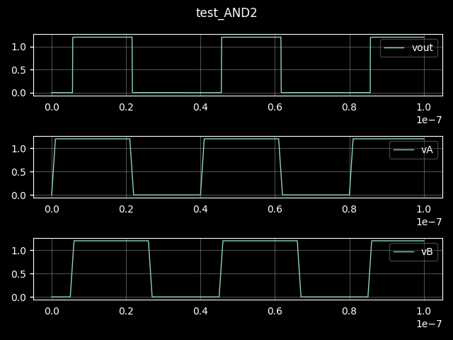
使用ahdlLib库模型
from_ahdlLib()介绍
TED支持从virtuoso的ahdlLib库读取Va模型并使用，通过APIfrom_ahdlLib()实现。下面是from_ahdlLib()的参数展示和说明。
def from_ahdlLib(
number_of_ports, model="", model_str: str = "", model_par: Dict = {}, **kwargs
):
"""
diode=from_ahdlLib(2, model="diode_sch", bv=10)
(a,b)>>diode
"""| 参数 | 说明 | 类型 | 默认值 |
|---|---|---|---|
| number_of_ports | 声明器件的端口数并且所有端口类型均为Input。生成的端口顺序与ahdlLib模型的端口顺序一致 | int | -- |
| model | 指定调用的模型，取值为ahdlLib中的模型名称 | str | -- |
| model_str | 将模型的参数以字符串的形式传入 | str | -- |
| model_par | 将模型的参数以字典的形式传入 | dict | -- |
| kwargs | 将模型的参数以关键字参数形式传入 | key=value | -- |
模型的参数传入可以通过model_str、model_par和以关键字参数形式传入，在生成网表时没有任何区别，用户习根据惯选择其中一种方式即可。三者的使用方式如下所示:
doide1=from_ahdlLib(2, model="diode_sch", bv=10)
doide2=from_ahdlLib(2, model="diode_sch", model_str="bv=10")
doide3=from_ahdlLib(2, model="diode_sch", model_par={"bv":10})注: 当模型的参数涉及python关键字时，应使用model_str或model_par模式对参数进行赋值。
示例
如下案例展示了从ahdlLib中调用二极管(diode_sch)进行仿真的代码，其中参数bv=10即为集合关键字参数，用来对二极管的bv参数进行赋值。对于二极管的其他参数，未赋值时将使用模型的默认参数。
from pyted import *
from modules.builtins import V
from tedhub.circuit.behavior import from_ahdlLib
def test():
@testbench
def test_from_ahdlLib():
diode = from_ahdlLib(2, model="diode_sch", bv=10)
("vp", "vn") >> diode
V("vp", "vn", dc=0.32)
dc()使用用户编写的VA模型
TED允许用户通过加载自己编写的VA模型进行电路仿真。加载编写的VA模型基本模板如下所示:
@module
def model_name(*node,**kwargs):
get_circuit().ahdl_include(va_file_path)
setup_builtin(
prefix,
model_name_in_va_file,
model_par_str,
is_sim=True,
)模板参数说明：
| 参数 | 说明 |
|---|---|
| node | 可变参数，用于定义模型端口 |
| kwarg | 关键字参数，用于定义模型的参数 |
| va_file_path | VA文件路径 |
| model_par_str | 将关键字参数转为字符串，用于模型参数赋值 |
示例
@module
def Lpf(
vin: Input,
vout: Output,
bandwidth=10e6,
):
get_circuit().ahdl_include(
f"{get_config()}/verilog/behaviorLib/LPF/veriloga/veriloga.va"
)
setup_builtin(
"L",
"lpf_1storder",
rf"bandwidth={bandwidth}",
bandwidth=float(bandwidth),
is_sim=True,
)@module
def Dff(
vin_d: Input,
vclk: Ctrl,
vout_q: Output,
vout_qbar: Output,
vlogic_high=1.2,
vlogic_low=0,
vtrans_clk=0.6,
vtrans=0.6,
tdel=0,
trise=10e-12,
tfall=10e-12,
model="d_ff",
):
get_circuit().ahdl_include(
f"{get_config()}/verilog/behaviorLib/DFF/veriloga/veriloga.va"
)
setup_builtin(
"D",
model,
f"vlogic_high={vlogic_high} vlogic_low={vlogic_low} vtrans_clk={vtrans_clk} vtrans={vtrans} tdel={tdel} trise={trise} tfall={tfall}",
is_sim=True,
)练习
使用內建元件或行为级模型对OTA的AC响应建模
@module
def ideal_opamp(
vip: Input, vin: Input, vout: Output, fz=10e6, fp=1e3, r2=10e3, gain=1000
):
c1 = 1 / (2 * np.pi * r2 * fz)
r1 = 1 / (2 * np.pi * c1 * fp) - r2
("npz", Vss(), vip, vin) >> VCCS(gm=-1 * gain)
R("npz", Vss(), modelstr="r=1,isnoisy=no")
R("npz", vout, modelstr=f"r={r1},isnoisy=no")
R(vout, "n3", modelstr=f"r={r2},isnoisy=no")
C("n3", Vss(), c=c1)
def test_homework_1():
from frontend.torch import T
@testbench
def test_ideal_opamp():
("vip", "vin") >> ideal_opamp() >> "vout"
V("vip", Vss(), ac=0.5)
V("vin", Vss(), ac=-0.5)
watch(
"vout",
mode="semilogx",
calc=lambda x: T.db20(x),
ylabel="dB",
xlabel="Hz",
)
watch(
"vout",
mode="semilogx",
calc=lambda x: T.phase(x),
ylabel="Deg",
xlabel="Hz",
)
raw = ac(start=1)
raw.show()